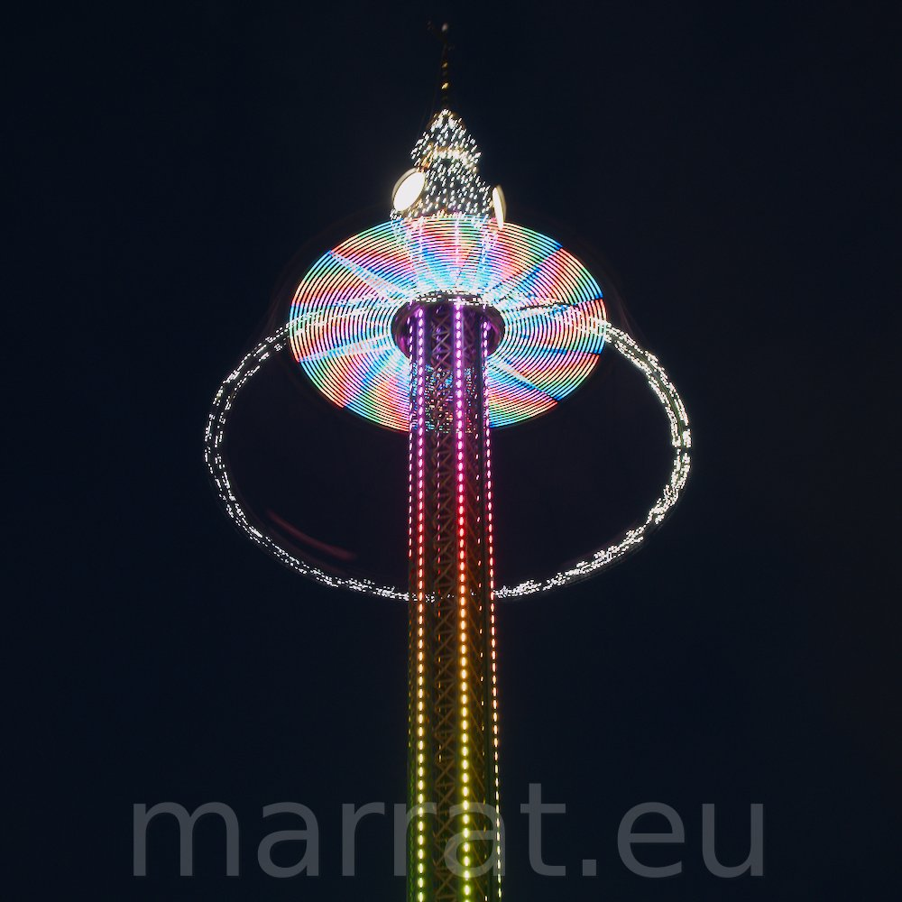
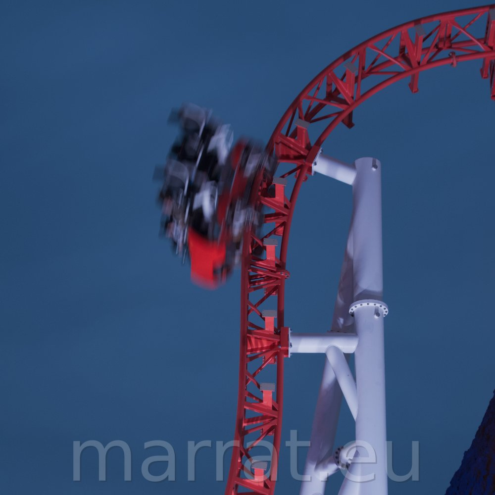
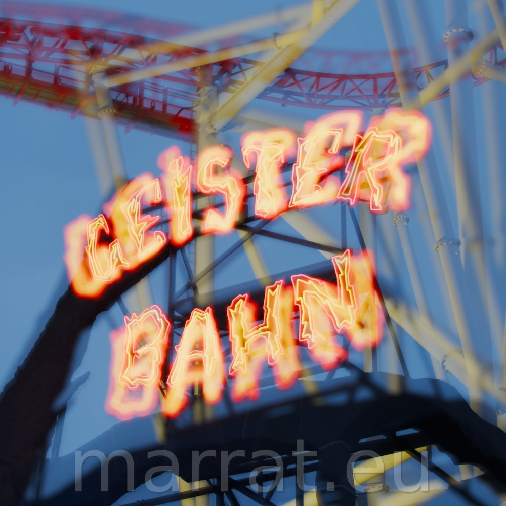

f/5.6 | 1s | ISO 1250 | 37.0 mm
FUJIFILM X-T5 + TAMRON 18-300mm f/3.5-6.3

f/4.5 | 1/30s | ISO 2000 | 59.9 mm
FUJIFILM X-T5 + TAMRON 18-300mm f/3.5-6.3

f/8.0 | 1s | ISO 125 | 32.1 mm
FUJIFILM X-T5 + TAMRON 18-300mm f/3.5-6.3